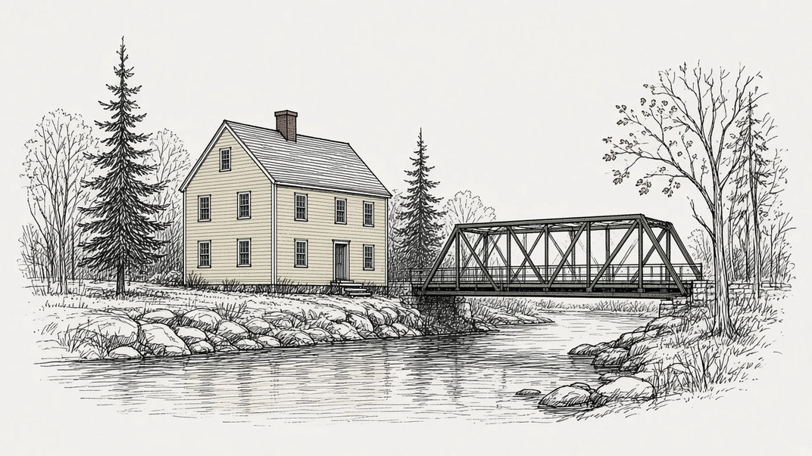

Stories we're following
Topsham's proposed sewer rate increase
Last updated
What's happening
The Topsham Sewer District proposes raising its quarterly rate from $78 to $82 for each 1,000 cubic feet of water used. The district says the current rates do not cover operations, maintenance, and treatment plant upgrades. Trustees will hear comments at 6 p.m. on Wednesday, Nov. 18, at the district office, then consider final approval at their regular meeting right afterward. If they approve the change, it would take effect Jan. 1, 2027.

The timeline
How the plan has moved
-
Jan. 1, 2026
Current rates took effect
Trustees accepted the present schedule on Nov. 12, 2025. The minimum quarterly charge is $78 for the first 1,000 cubic feet.
-
Nov. 13, 2026
Written comments are due
The district says it will consider written comments until 4 p.m. on Friday, Nov. 13.
-
Next Nov. 18, 2026
Public hearing on the increase
6 p.m. at Bowdoin Mill building #1, Suite 203. After the hearing, the board will consider final authorization at its regular meeting the same night.
-
Jan. 1, 2027
Proposed start date
If the board approves the change, the public notice says it would take effect this day.
Next
Public hearing Wed., Nov. 18, 6 p.m.
Topsham Sewer District office, Bowdoin Mill building #1, Suite 203, at 1 Bowdoin Mill Island. After the hearing, the Board of Trustees will consider final authorization at its regular meeting the same night. Written comments are being accepted until 4 p.m. on Friday, Nov. 13.
The proposal
Key points
Current rate
$78
per 1,000 cubic feet, each quarter
Proposed
$82
per 1,000 cubic feet, each quarter
Nothing about the increase has been approved.
- A customer at the minimum would pay $16 more a year
- A customer using 8,000 cubic feet a year would pay $32 more
- If approved, the change would start Jan. 1, 2027
- The district cites operations, maintenance, and treatment plant upgrades
- The sewer district's trustees decide, not the Select Board
The stakes
Who decides
Board of Trustees
The Topsham Sewer District is a separate district with its own board. That board will hear comments on Nov. 18 and, the same night, consider whether to authorize the new rate.
Customers
Anyone may comment at the hearing. Written comments are being accepted until 4 p.m. on Friday, Nov. 13, at the address in the public notice.
What's being decided
Whether to raise the quarterly sewer rate from $78 to $82 per 1,000 cubic feet of water used, effective Jan. 1, 2027 if approved.
Gaps
Not yet available
- The result of the Nov. 18 hearing, or of any vote that night
- Whether the board will approve a Jan. 1, 2027 start
- A full proposed rate schedule beyond the $78 to $82 figure and the two customer examples
- Whether other charges on the current schedule, such as the readiness-to-serve fee or the $2,500 entrance fee, would change
- A breakdown of how much of the increase would go to operations, maintenance, or treatment plant upgrades
- Written comments submitted so far
- Official minutes of the hearing or the regular meeting that follows
- The date the public notice was first posted
- Independent news coverage of this proposal in the Press Herald, the Times Record, or News Center Maine, as of Nov. 10
Records
Details and sources
- A public notice posted on the Town of Topsham website says the Topsham Sewer District Board of Trustees will hold a public hearing at 6 p.m. on Wednesday, Nov. 18, 2026, at the district office in Bowdoin Mill building #1, Suite 203, in Topsham. The hearing is to take comments on proposed changes to current sewer rates.
- The same notice says current rate funding is inadequate to pay for the costs of operations, maintenance, and treatment plant upgrades. It says the district plans to increase the current sewer rate from $78.00 to $82.00 per 1,000 cubic feet of water usage per quarter. A customer using the minimum would pay an additional $16.00 a year. A customer using 8,000 cubic feet a year would pay $32.00 more a year.
- After the hearing, the notice says, the board will consider the item for final authorization at its regularly scheduled meeting, starting immediately after the hearing. If approved, the change would take effect Jan. 1, 2027. Written public comments will be considered until 4 p.m. on Friday, Nov. 13, 2026. The notice lists P.O. Box 370, Topsham, Maine 04086, topshamseweroffice@gmail.com, and 207-729-3612.
- The district's own website, read Nov. 10, 2026, lists the office at 1 Bowdoin Mill Island, Suite 203, and notes a "Sewer Rate Increase Public Hearing 11/18/2026." It lists Mark Ponziani as chair, Stuart W Kay, III, as treasurer, and Dwight Balser as secretary.
- The district's current schedule of rates, accepted by the Board of Trustees on Nov. 12, 2025, and effective Jan. 1, 2026, sets a $78.00 minimum quarterly charge for water usage between 0 and 1,000 cubic feet, plus $7.80 per additional 100 cubic feet. Unmetered users and the readiness-to-serve charge are also $78.00 a quarter. New connections are assessed a $2,500.00 entrance fee per EDU. The Nov. 18 public notice does not say whether those other lines would change.
- The town calendar, read Nov. 10, 2026, lists "Topsham Sewer District Public Hearing on Rate Increase" at Bowdoin Mill Building, #1 Suite 203, starting at 6 p.m. on Wednesday, Nov. 18, 2026. That start time and place match the public notice. The calendar also displays a later end stamp of 10 a.m. on Friday, Nov. 20; the official notice describes a 6 p.m. hearing on Nov. 18, followed the same night by the regular meeting.
- A search on Nov. 10, 2026, of the Portland Press Herald, the Times Record, and News Center Maine did not turn up coverage of this proposed increase.
- Town of Topsham public notice, Topsham Sewer District hearing
- Topsham Sewer District website
- Schedule of Rates, effective Jan. 1, 2026 (PDF)
- Town of Topsham calendar